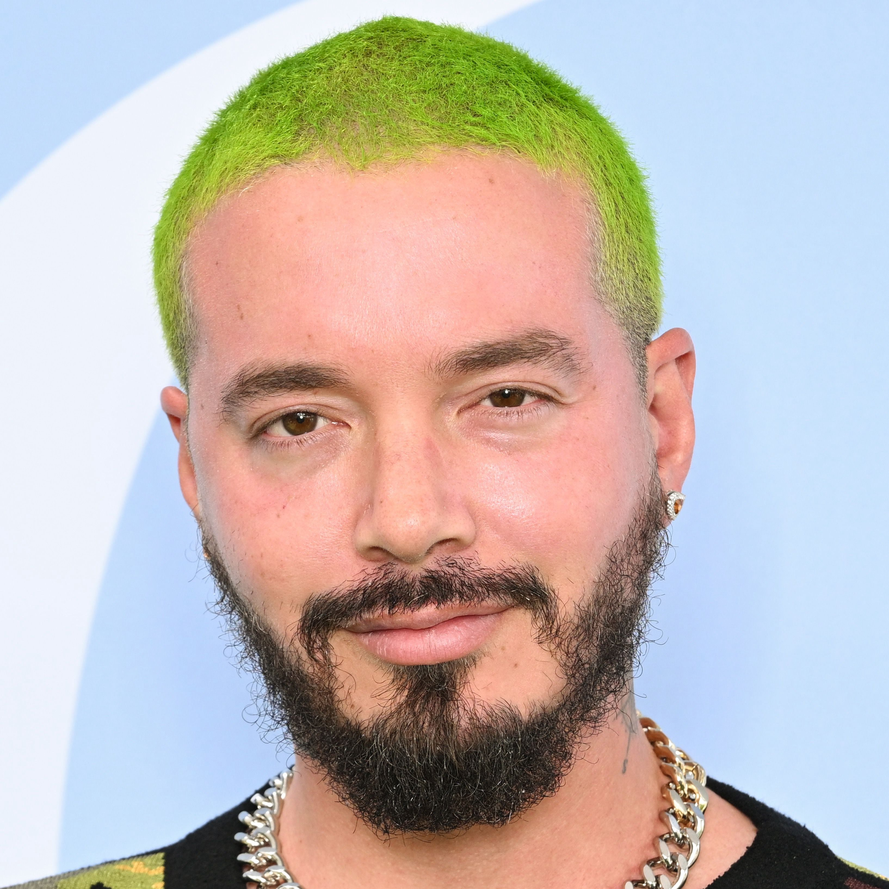

J Balvin
Born: 07 May 1985
Age:
Years Active: 2004–present
Genre/s: Reggaeton, urbano, Latin pop
Label/s: Capitol Latin, Universal Latino, Infinity, Capitol
José Álvaro Osorio Balvín (born 7 May 1985), known professionally as J Balvin, is a Colombian singer. He is one of the best-selling Latin artists, with 35 million records sold worldwide. Balvin was born in Medellín. At age 17, he moved to the United States to learn English, living in both Oklahoma and New York. He then returned to Medellín and gained popularity performing at clubs in the city.
Throughout his career, Balvin has won eleven Billboard Latin Music Awards, six Latin Grammy Awards, five MTV Video Music Awards and seven Latin American Music Awards and received four Grammy Award nominations. In 2017, the BMI Latin Awards named him the Contemporary Latin Songwriter of the Year for his contribution in the Latin music industry, and has won the first Global Icon Award given by Lo Nuestro Awards, in recognition of his contribution to spread Latin music worldwide. He became the first Latino to headline world-musical events such as Coachella, Tomorrowland, and Lollapalooza. The Guinness World Records acknowledged him as a "leader of a second-generation reggaeton revolution".
Balvin's breakthrough came in 2014 with the single "6 AM" featuring Puerto Rican singer Farruko, which peaked at number 2 on the Billboard Hot Latin Songs chart, followed by "Ay Vamos" and "Ginza". In 2016, he released Energia, which included the hit singles "Bobo", "Safari", and "Sigo Extrañándote". In June 2017, Balvin released the single "Mi Gente" with Willy William. On 1 August 2017, "Mi Gente" topped the Global Top 50 on Spotify, and later reached one billion views on YouTube. In January 2018, he released the hit single "Machika" featuring Jeon and Anitta. He collaborated with Cardi B and Bad Bunny on the US Billboard Hot 100 number-one single "I Like It", which was also nominated for the Grammy Award for Record of the Year. Balvin released his fifth studio album José in March 2021 and his sixth album Rayo in August 2024.
Though his music is primarily reggaeton, Balvin has experimented with a variety of musical genres in his work, including electronica, house, Latin trap, and R&B. His original musical inspirations included rock groups such as Metallica and Nirvana, and fellow reggaeton artist Daddy Yankee. He has collaborated with Latin American artists such as Ozuna, Nicky Jam, Bad Bunny and Pitbull. Despite working with many English-speaking artists such as Beyoncé, Pharrell Williams, Black Eyed Peas, Cardi B, Dua Lipa and Major Lazer, Balvin continues to sing almost exclusively in Spanish, and hopes to introduce Spanish-language music to a global audience. He is also noted for his eclectic and colorful fashion sense.
Balvin received the Vision Award from the Latin heritage Awards in 2016, and in 2019 he won the Golden Artist of Latin Urban Music at the Premios Heat. In 2020 he was included on Time magazine's annual list of the 100 most influential people of the world, and was called one of the Greatest Latin Artists of All Time by Billboard. Balvin is the artist with the most number one songs on the Billboard Latin Airplay chart. He is also the only Latin artist to reach number one on the Billboard charts 174 times.